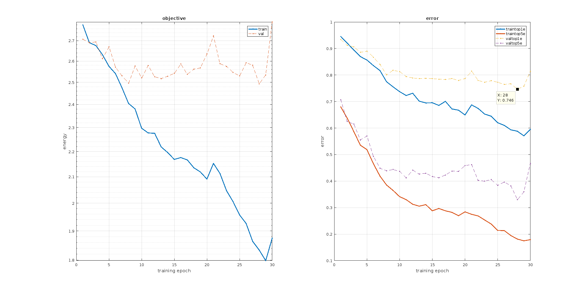
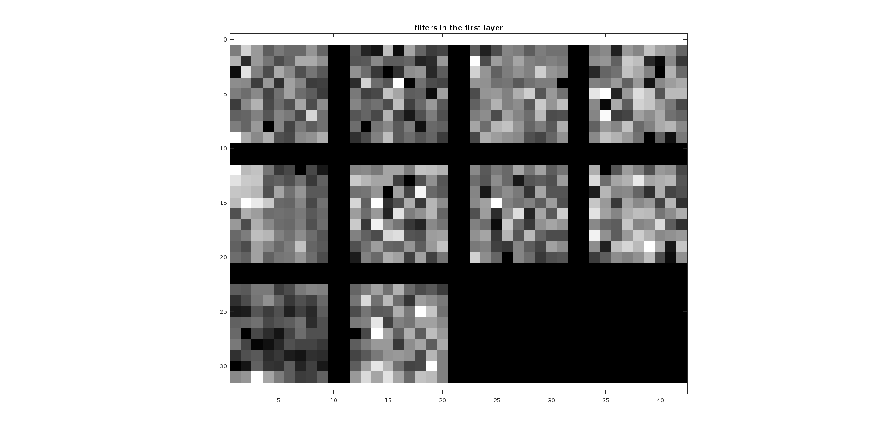
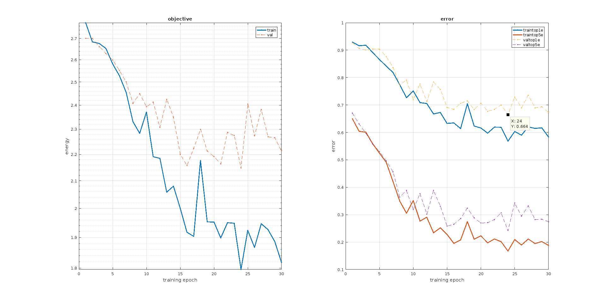
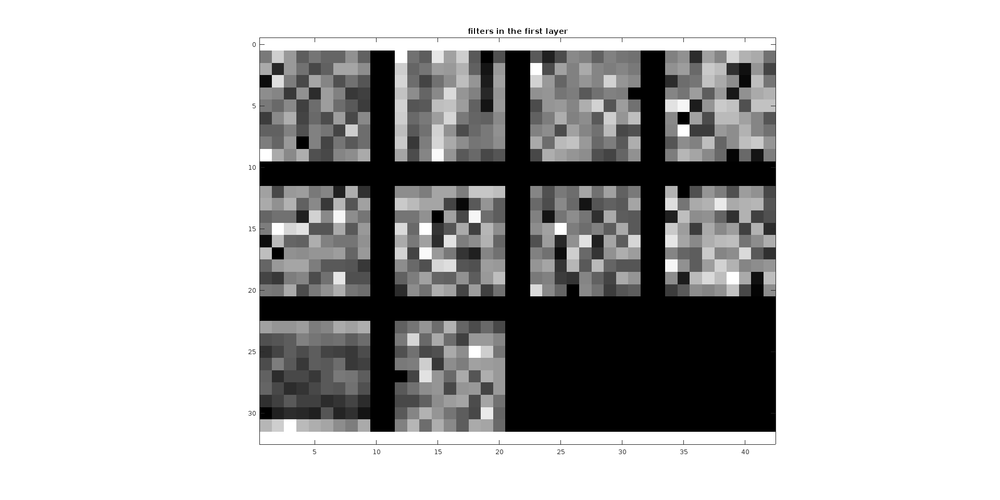
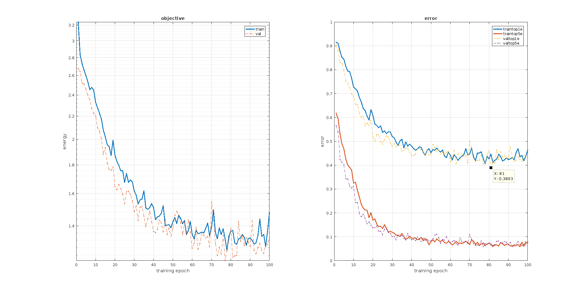
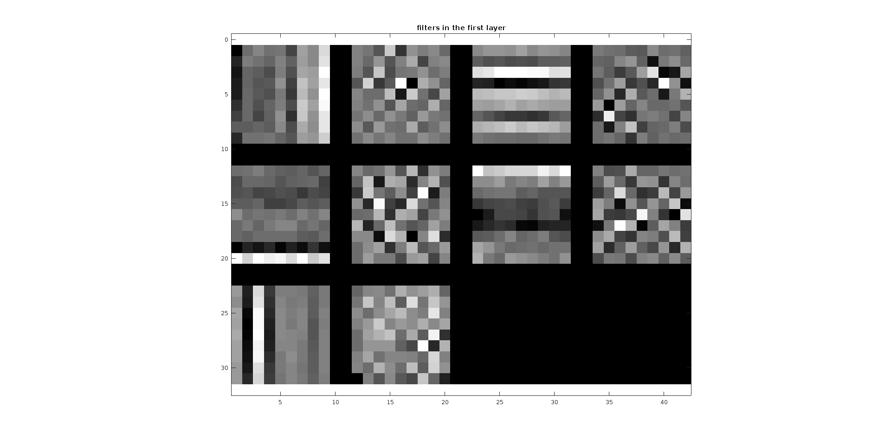
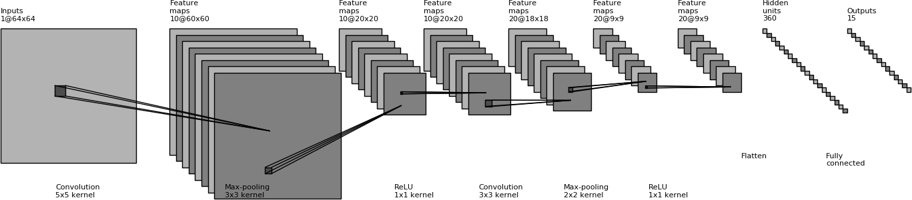
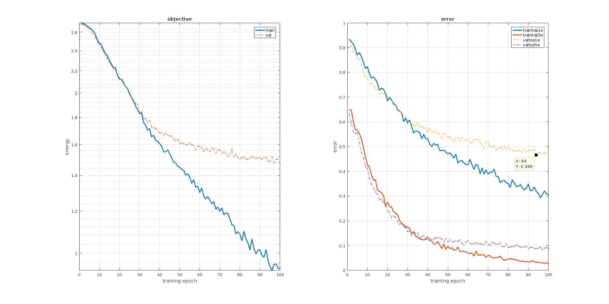
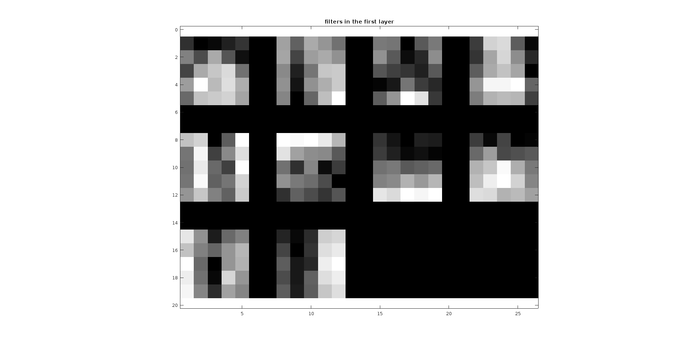

I ran the skeleton Convolutional Neural Network(CNN) that was provided without any modifications. The lowest validation error I obtained in this case was 0.746 - an accuracy of 25.4% which is pretty bad!
 As you can see in the above plots, the training error keeps decreasing to almost 0 at the end of training - however, the test set error (which also happens to be the validation set for this project) doesn't decrease after a point. This is because we are overfitting the network to our limited training data.
I implemented jittering by flipping(mirroring) a fraction(set to 50%, but changeable) of each of the training batch images. So effectively, I have a training data of size 3000 images now. Keeping all the other parameters same as before, I obtained a lowest validation error of 0.664 - an accuracy of 33.6%, an increase of ~8% from our previous result. Changing the number of epochs from 30 to 40 or 60 didn't change the accuracy by more than 1%, so I am not presenting the result here.
 Note that on the right-hand side plot, the training error doesn't decrease as rapidly as in the previous case. In fact, it increases a bit toward the end. This is because we have reduced the overfitting by augmenting the training data.
Since we have a limited dataset, I added dropout regularization. It is easy to do so by adding a dropout layer (after the 1st convolutional layer) to our network using the MatConvNet library. With a dropout rate of 0.5, a learning rate of 0.0001(same as previous) and 100 training epochs, I get a lowest validation error of 0.3893 - an accuracy of 61.01%, an increase of ~8%.
 Note that the filters in our convolutional layers are much more stuctured than before.
We seem to be losing valuable information from the convolutional layer due to the max-pooling layer since it downsamples the convolutional layer pretty heavily - ie, by a factor of 7. One way to fix this is to downsample it much more slowly across the network, by adding more convolutional layers (and max-pool layers) - this reduces the lossiness of the network. However, deeper networks need lot more data to get good results since now the network can be intuitively assumed to be approximating a more complex function and learning the correct weights would require more training data.
I added one more Conv unit (a convolutional layer, a max-pooling layer and a ReLU layer) on top of the previous convolutional layer to make the network 3 layers deep. Note that, when counting the depth of the network I'm only counting the layers that have weights to be learned (so, ReLU, max-pooling and dropout layers are ignored). Here is the network configuration:

Without augmenting the data any further (we already added random mirroring), with 100 epochs and a learning rate of 0.0001, I obtained a lowest validation error of 0.466 - an accuracy of 53.4%.


It would be interestin to see how the VGG-F network can be adapted and tuned to predict scene attributes instead of categories. I downloaded the SUN attributes database from here. I modified the VGG-F network to output 102 attribute predictions instead of multi-class category predictions and uses a logistic log loss function (refer vl_nnloss()).
However due to timing limiatations, I couldn't complete the training and analysis of the results before the deadline - so I leave the code (proj6_part3.m) as it is.